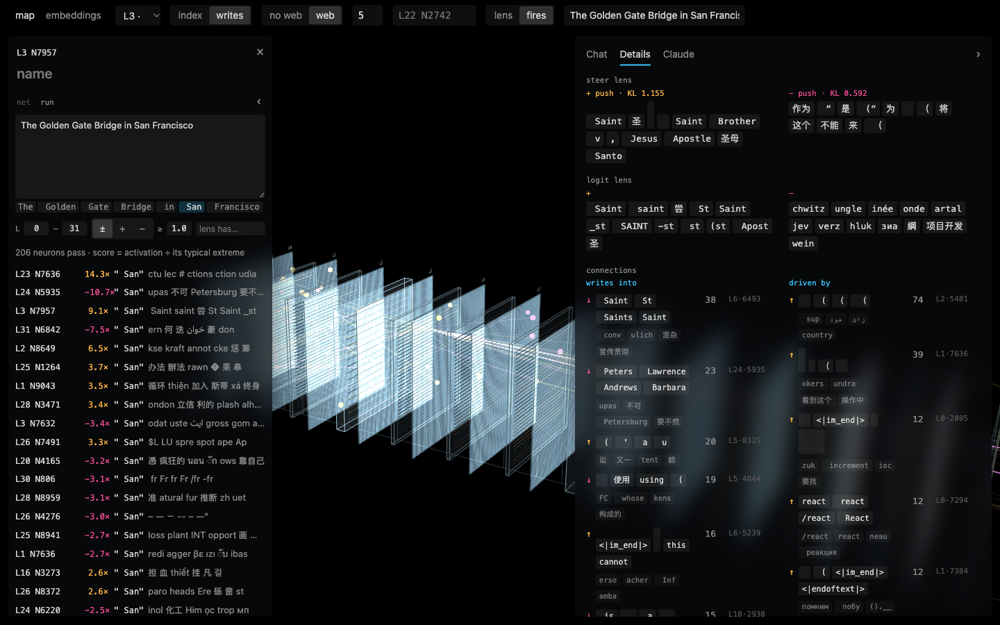
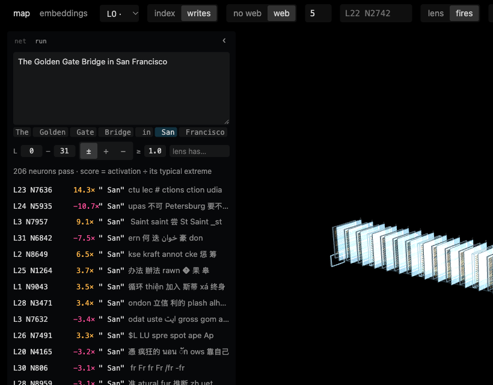
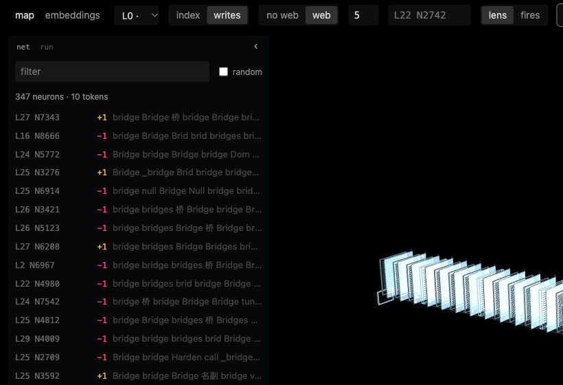
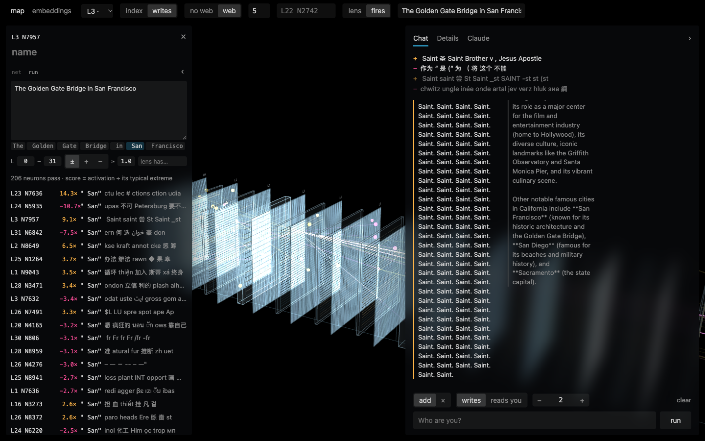

Using the neuron explorer
Qwen3.5-4B has 32 layers, and each layer has 9,216 neurons. The explorer lets you see which ones react to your text, look up what each one does, and push one up or down to watch the model's answers change.
Open localhost:8791. The screenshots below are the real app on this Mac.
The screen

1 2 3 4Top bar
- lens / fires switches what the search box does. lens finds neurons by word; fires runs your text through the model.
- The
L22 N2742box jumps to a neuron: type a layer and number, then Enter. - web draws the open neuron's links across layers; the number sets how many links each way.
- writes / index arranges each sheet: neurons with similar effects side by side, or in number order.
Left panel
- run shows the fires results for your text.
- net shows lens search results, or the open neuron's links.
- Click any row to open that neuron.
‹hides the panel.
The map
- Each white sheet is one layer: layer 0 at the far left, layer 31 nearest you on the right. Each dot is a neuron.
- Drag to rotate, scroll to zoom. Hover a dot for a quick summary; click it to open it.
- Click a layer's label to look at that sheet face-on. The button at the top takes you back to all layers.
- Orange lines push the next neuron up, pink lines push it down.
Neuron panel
- Details: which words the neuron promotes, and which neurons it feeds or is fed by.
- Chat: ask the model something with this neuron pushed up, untouched, and pushed down, side by side.
- Claude: an assistant that can run the explorer for you (see the note at the end).
See which neurons fire on your text
- Click fires in the top bar.
- Type or paste text into the box on the left and press Enter. The model reads it once.
- The list shows every neuron that fired unusually hard, strongest first.
- Your text appears as word chips under the box. Hover one to preview it; click one to keep only the neurons that fired on that word. The map lights them up.
- Narrow the list with the filters:
L 0 – 31limits it to a range of layers.±+−shows both directions, or only one.≥ 1.0is the minimum score. Raise it to see only the strongest.lens has…keeps neurons whose lens contains a word.

Reading one row
The score compares this activation with the neuron's usual peak on ordinary web text. 9.1× means nine times higher than it normally gets. A pink, negative score means it went unusually far below zero.
Strings in the lens are often fragments or other languages, like ctu lec # ctions. Many neurons mix several unrelated jobs, so a clean row like this one is the lucky case.
Find neurons for a word or idea
- Click lens in the top bar.
- Type a word, such as
bridge. The search runs as you type. - The left panel lists every neuron whose lens contains it. "bridge" finds 347.
- + means pushing the neuron up makes the model more likely to say the word. − means pushing it down does. The number after it is the word's rank in that list.
This works without running any text, so it's the quickest way to find a starting point.

Work out what one neuron does
Open a neuron by clicking it in any list, on the map, or with the jump box.
Details tab
- steer lens: the words that become more likely when the neuron is pushed. This is measured by actually running the model, so it's the best single clue. KL is how much the push changes the model's next-word guesses overall; higher means a stronger effect.
- logit lens: the words its output points at directly, ignoring every later layer. Faster but rougher.
- connections: writes into lists the later neurons it feeds; driven by lists the earlier ones that feed it. ↑ excites, ↓ suppresses, and the number is the link's strength. Click one to follow it.
Chat tab: test your guess
Type a question and press run. You get three answers side by side: neuron pushed up, untouched (0), and pushed down. Earlier turns stay in the conversation.
- add pushes the neuron by a fixed amount (the dose) at every word. × multiplies what it already does;
×0switches it off. - − 2 + sets the dose. Start low and step up.
- reads you skips generation: it colours each word of your text by how strongly this neuron reacts to it.

"Name a famous city in California." with the L3 N7957 neuron at three doses:
| dose | pushed up | pushed down |
|---|---|---|
| 0.8 | Los Angeles | **Los Angeles** is a famous city in California… |
| 2 | Saint. Saint. Saint. Saint. Saint… | The question asks: What is a famous city in California. |
| 4 | Johns. John. John. . . . | The time are The time are The The… |
At 0.8 the change is barely visible. At 2 the neuron's idea, "Saint", takes over. At 4 the model falls apart, though "John" still hints at Saint John. If nothing changes, raise the dose. If everything turns to noise, lower it.
Words you'll see
- Neuron
L3 N7957 - Unit 7957 in layer 3's feed-forward block. Early layers tend to react to the words themselves; later layers more to meaning and what to say next.
- Activation
- How strongly a neuron responds at one word. It can go positive or negative.
- Score
9.1× - Activation divided by that neuron's usual peak, so neurons with different ranges can be compared.
- Steer lens
- Words that get likelier when you push the neuron up (left column) or down (right column).
- Logit lens
- Words the neuron's output points to directly, before later layers change anything.
- KL
- How much a push changes the model's next-word predictions. Bigger means more influence.
- Dose
- How hard you push in Chat. It defaults to 0.8; step it up until the answer changes, and back off when it turns to noise.
- Web
- The chain of strongest links into and out of the open neuron across all layers.
- Heads
- The thin lines between sheets are attention heads, the parts that move information between words. Click one to open it.
What isn't available here
- The Examples tab, embeddings view, neuron names and the default neuron ranking need sweep data that's generated on a CUDA GPU server. The repo doesn't include it, so those stay empty.
- The Claude tab runs the
claudecommand-line tool on this Mac with access to your home folder and a shell. Only use it if you're comfortable with that. - If the top-right corner says
loading, the model is still starting up. Opening neurons, hover and fires wait until it's gone.